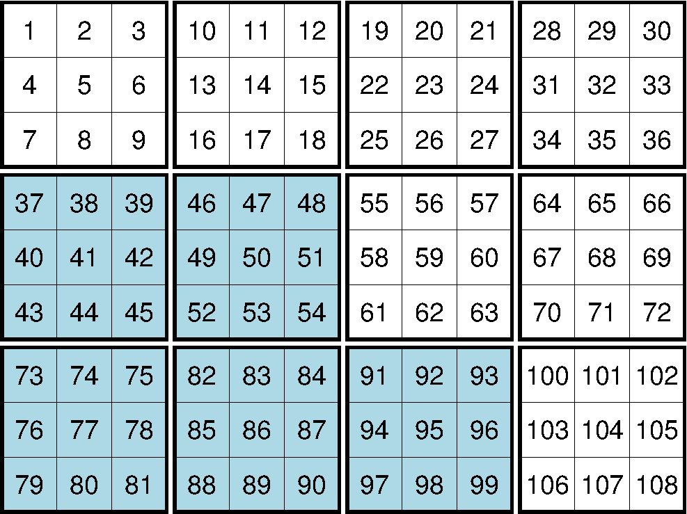

6.7 netCDF文件格式¶
6.7.1 格式说明¶
netCDF的非数据部分，包含了众多属性，这些属性完整地描述了netCDF文件的内容。下表列出了netCDF的众多属性：
| Attribute | Description |
|---|---|
| Global attributes | |
| Conventions | COARDS, CF-1.5 (optional) |
| title | Title (optional) |
| source | How file was created (optional) |
| node_offset | 0 for gridline node registration (default), 1 for pixel registration |
| x- and y-variable attributes | |
| long_name | Coordinate name (e.g., “Longitude” and “Latitude”) |
| units | Unit of the coordinate (e.g., “degrees_east” and “degrees_north”) |
| actual range (or valid range) | Minimum and maximum x and y of region; if absent the first and last x- and y-values are queried |
| z-variable attributes | |
| long_name | Name of the variable (default: “z”) |
| units | Unit of the variable |
| scale_factor | Factor to multiply z with (default: 1) |
| add_offset | Offset to add to scaled z (default: 0) |
| actual_range | Minimum and maximum z (in unpacked units, optional) and z |
| _FillValue (or missing_value) | Value associated with missing or invalid data points; if absent an appropriate default value is assumed, depending on data type. |
默认情况下，GMT会将netCDF文件中的第一个2D变量作为Z变量，而坐标轴X和Y的范围则从属性中提取出来。
6.7.2 分块与压缩¶
出于性能的考虑，GMT在输出超过16384个网格单元的网格文件时，会打开分块功能。所谓分块，即数据不是按照一行一行序列存储的，而是将整个网格分成若干个区块，然后依次存储每个区块的数据。
下图描绘了一个分块的netCDF文件的布局。为了读取数据的一部分（比如左下角的四个蓝色区块），netCDF只需要读取相应的区块即可，不用先读取整个数据。

{kind=link}
图 6.6 网格分块
由于数据的压缩和解压比磁盘IO要快，因而可以对netCDF数据进行压缩，使得磁盘占用更少，IO负载更少。netCDF的压缩可以分为若干等级，压缩级别越高，文件越小，读写数据越快，但压缩/解压越耗时。通常，压缩级别取1到3效果比较好。
GMT参数 IO_NC4_CHUNK_SIZE 可以控制分块的大小， IO_NC4_DEFLATION_LEVEL 可以控制压缩等级。